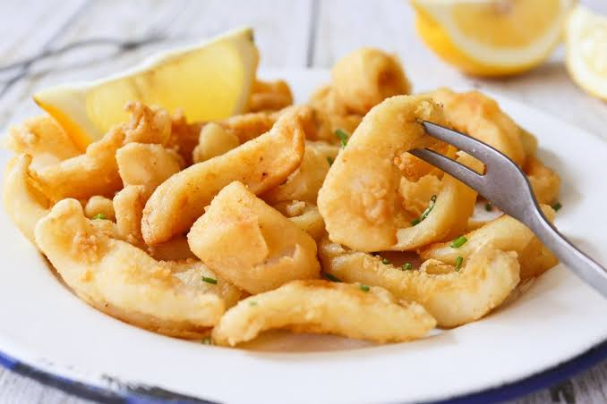
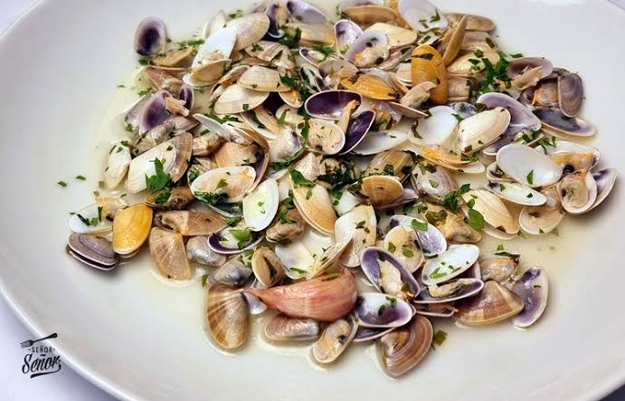
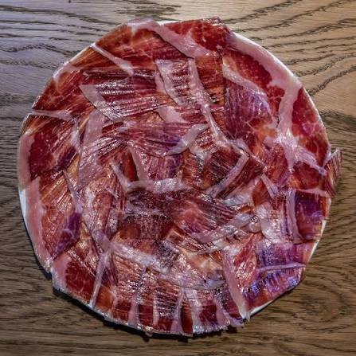
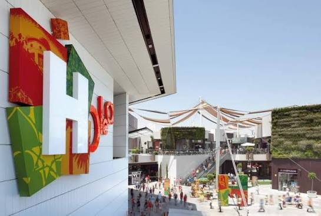

The Authentic Taste of the Sea, Mountains, and Countryside
Officially named Spanish Capital of Gastronomy (a title held under the motto "The Pantry of Europe"), Huelva is a culinary paradise famous for its white prawns, acorn-fed Iberian ham (DOP Jabugo), wedge clams (coquinas), fried cuttlefish, and Condado wines.

Where to Eat and Shop by Area
Click on each tab to explore our selection of recommended bars and shopping areas:

Must-Try Tapas in Huelva Capital
Downtown Huelva (around Gran Vía, Plaza de las Monjas, and Calle Vázquez López) is packed with historic bars where fresh seafood and traditional tapas take center stage.
Bar Pappardelle / Azabache
Location: Calle Vázquez López.
A culinary benchmark in the capital. Be sure to try their signature tapas made with local ingredients, Iberian cured meats, and Condado wines.
Bar Juan José
Location: Calle Villarrasa.
Famous across Spain for its juicy Spanish potato omelet, boiled white prawns, and Russian potato salad.
Cervecería Bonilla
Location: Calle Concepción.
A classic local meeting spot for ice-cold draft beer paired with small sandwiches (montaditos), cured tuna (mojama), and fresh estuary seafood.

Seaside Flavors in Punta Umbría and El Rompido
Just minutes from the capital, the coastal fishing villages serve freshly auctioned fish, garlic wedge clams (coquinas), baby clams, and seafood rice dishes overlooking the Atlantic or the Piedras estuary.
Calle Ancha & Plaza Pérez Pastor
Punta Umbría's iconic promenade lined with tapas bars and fried-fish spots (such as Casa Diego and El Tabla) serving fried cuttlefish, anchovies, and prawns.
El Rompido Waterfront
Restaurants like Caribe II and La Patera stand out for their views of the Flecha del Rompido sandspit, seafood rice dishes, and fresh coquinas.
La Canaleta Beach Bars (Chiringuitos)
Ideal at sunset in Punta Umbría for grilled fish and skewered sardines with your feet practically in the sand.

Mountain Taverns in Sierra de Huelva
In mountain towns such as Aracena, Jabugo, Linares de la Sierra, and Alájar, the pasturelands (dehesa) take the spotlight: charcoal-grilled Iberian pork cuts, acorn-fed ham, and wild mushroom stews.
Restaurante Casas / José Vicente
Top spots in the heart of Aracena for hand-carved Iberian ham, wild boletus mushroom croquettes, and charcoal-grilled meats.
Restaurante Arrieros
Renowned for its creative mountain cuisine rooted in local garden produce and Iberian pork in a picturesque rural setting.
Jabugo & El Repilado Taverns
World cradle of Protected Designation of Origin Iberian ham. A mandatory stop to sample artisan Iberian cured meats.

Shopping Malls and Local Stores in Huelva
From large open-air retail parks to traditional food markets and pedestrian shopping streets filled with local boutiques.
Holea Shopping Center
Location: Ronda Exterior Norte.
The province's largest open-air shopping center, featuring over 100 fashion stores, cinemas, a hypermarket, and a wide dining area.
Aqualon Shopping Center
Location: Paseo de la Ría.
Known for its outdoor terraces overlooking the Odiel River, cafés, restaurants, and family entertainment venues.
Mercado del Carmen & Calle Concepción
At Mercado del Carmen you can buy fresh seafood straight from the fish auction, while downtown pedestrian streets offer local shops and souvenirs.